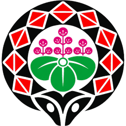

過濾會減輕咳嗽、掉筆、拖桌椅等短促／非人聲干擾；連續大聲講話仍會判定太吵。
今天聯絡簿寫的作業，明天才會出現在檢查清單。點座號循環：沒交 → 要訂正 → 完成（+1 金幣）。不是作業的項目可按「不需檢查」。
一次排好週一～週五的作業；儲存後會寫進各日聯絡簿，隔天就能在「作業檢查」打勾，未完成會出現在公告跑馬燈。
固定每日任務（打掃、放學整理等）。點座號打卡，每完成一項 +1 金幣；再點一次取消。